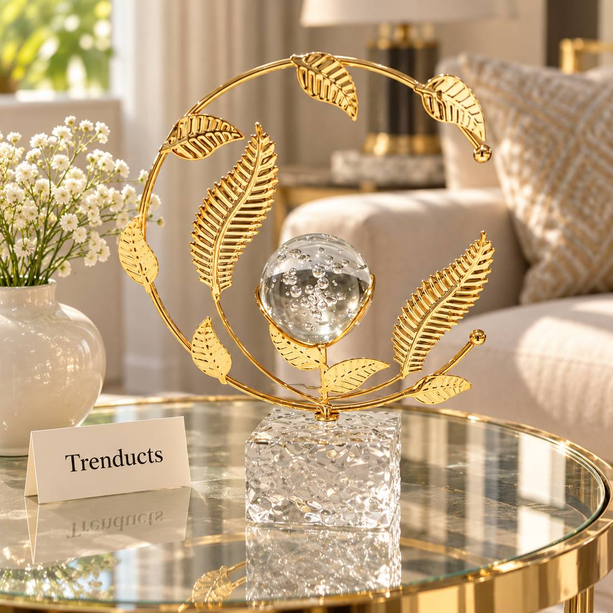
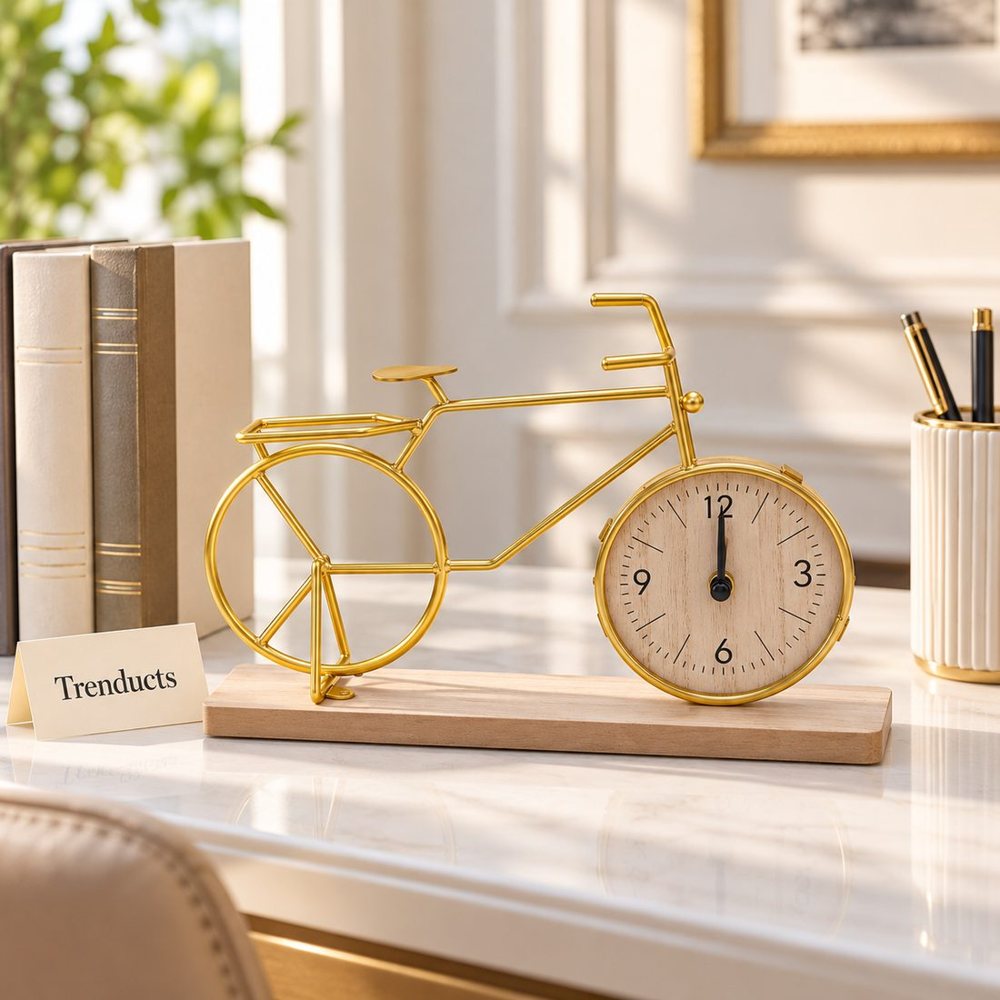

Renting is common in Pakistan's cities, especially for young professionals, newly married couples and families who move for work. Many landlords do not want holes in the walls, and some rental agreements explicitly forbid changes. That can leave a rented home feeling bare and temporary.
It does not have to. Many of the most effective decorating choices need no drilling at all, and they move with you to the next home.
Think tabletop and freestanding
Walls are the first thing people want to decorate, but surfaces are just as important. Side tables, shelves, a console table and the top of a sideboard are all places to display decor without touching the walls.

- Metallic table decor, such as a crystal ball stand or a bicycle clock, catches light and adds interest.
- Sculptures and busts make a strong statement on a console or side table.
- Table clocks do a job and decorate at the same time.
- Trays group small items neatly and can move from room to room.
Lean, do not hang
Large mirrors and framed art can lean against the wall on a sideboard, a mantel or even the floor. A leaning mirror makes a small room feel larger and brighter. A row of framed prints on a narrow ledge shelf can be rearranged at will.
Textiles change a room quickly
Fabric is the renter's best friend. A rug defines a seating area and covers worn flooring. Cushion covers in new colours refresh an old sofa. Curtains, which usually hang from existing rods, can transform a room's mood. A throw over a chair adds texture and warmth in winter. All of this can be packed up and taken along.
Light for atmosphere
Rental flats often have harsh tube lights. Table and floor lamps with warm bulbs create a cosier feel in the evening. A lamp in a corner and another beside the sofa make the main light unnecessary for relaxing.

Plants, real or artificial
Plants bring life into a room. Real plants are lovely if the flat gets light and someone remembers to water them. In darker flats, or for people who travel often, good artificial plants give a similar effect with no maintenance.
Removable hooks and strips
For small items like keys, towels or a lightweight frame, adhesive hooks and strips are available that hold without nails. Read the weight limit carefully, test in an inconspicuous spot and remove them slowly when moving out to avoid peeling paint.
Furniture as decor
Freestanding bookshelves, a room divider screen or a decorative trolley give storage and style without installation. A divider can separate a sleeping area in a studio flat or hide a work corner.
Make it personal
A rented home feels like yours when it holds your things. Display family photos in frames on shelves, put a favourite calligraphy piece on a small easel, and keep a bowl of things you have collected on your travels. These items are what visitors notice, not the walls.
Talk to your landlord
Some landlords are happy for tenants to hang a few frames or a curtain rod if asked politely, especially for a long lease. It costs nothing to ask, and getting permission in writing, even by a WhatsApp message, avoids disputes later. Offer to fill and paint any holes before you leave. Clear communication often makes renting more flexible than people expect.
Before you move out
Keep a box for decor items so packing is quick. Remove adhesive hooks carefully and wipe any marks. Leaving the place as you found it helps you get your full security deposit back.
Finding decor pieces
For tabletop showpieces, table clocks and sculptures that need no drilling, browse the home decor pieces at Trenducts.pk, delivered across Pakistan.
Home, wherever you are
A rented flat can feel just as warm as a home you own. With tabletop decor, textiles, good lamps and personal touches, you can create a space you love and take it all with you when it is time to move.